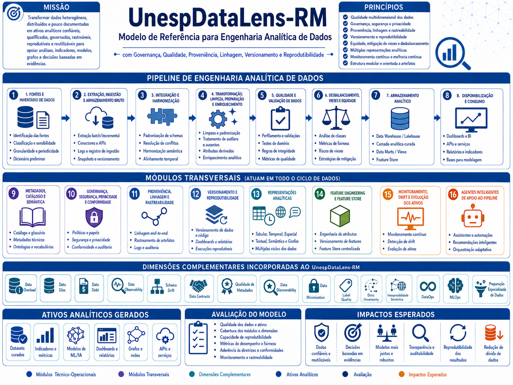

Dados confiáveis, governados e reprodutíveis
Estrutura integrada para projetar, documentar, avaliar e operar pipelines de Engenharia Analítica de Dados — do inventário das fontes aos agentes inteligentes.
Visão geral do modelo

Do dado bruto ao ativo analítico
Fontes e Inventário de Dados
O Módulo 1 — Fontes e Inventário de Dados tem como finalidade identificar, mapear, caracterizar, classificar e documentar as fontes de dados que poderão compor o ecossistema analítico do UnespDataLens-RM. Esse módulo constitui a etapa inicial do modelo de referência, pois estabelece a base de conhecimento sobre quais dados existem, onde estão localizados…
ExplorarExtração, Ingestão e Armazenamento Bruto
O Módulo 2 — Extração, Ingestão e Armazenamento Bruto tem como finalidade operacionalizar a entrada controlada dos dados no ambiente analítico do modelo de referência UnespDataLens-RM, a partir das fontes previamente identificadas, caracterizadas e documentadas no Módulo 1 — Fontes e Inventário de Dados.
ExplorarIntegração e Harmonização
O Módulo 3 — Integração e Harmonização tem como finalidade combinar, relacionar, compatibilizar e organizar dados provenientes de múltiplas fontes, previamente identificadas no Módulo 1 — Fontes e Inventário de Dados e ingeridas no Módulo 2 — Extração, Ingestão e Armazenamento Bruto.
ExplorarTransformação, Limpeza, Enriquecimento e Preparação dos Dados
O Módulo 4 — Transformação, Limpeza, Enriquecimento e Preparação dos Dados tem como finalidade preparar os dados integrados e harmonizados para uso analítico, por meio da aplicação controlada, documentada e rastreável de procedimentos de padronização, correção, tratamento de inconsistências, criação de atributos derivados, normalização, enriquecimento…
ExplorarExplore por tipo de conhecimento
Conceitos
Fundamentos conceituais usados em todo o modelo de referência.
ExplorarTécnicas e Tecnologias
Técnicas, bibliotecas, plataformas e tecnologias aplicáveis aos pipelines.
ExplorarArtefatos
Entregáveis formais, registros, manifestos, mapas e produtos de dados.
ExplorarMétricas
Indicadores para medir qualidade, cobertura, rastreabilidade e desempenho.
ExplorarProblemas Tratados
Riscos, falhas e limitações que o UnespDataLens-RM ajuda a enfrentar.
ExplorarAplicações
Contextos em que o modelo pode ser instanciado e avaliado.
ExplorarTrilhas de Estudo
Percursos orientados para estudar o modelo por objetivo ou perfil.
ExplorarMétodos e Algoritmos
Métodos de processamento, validação, integração, explicabilidade e análise.
Explorar